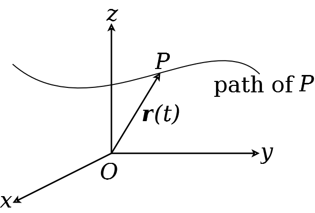
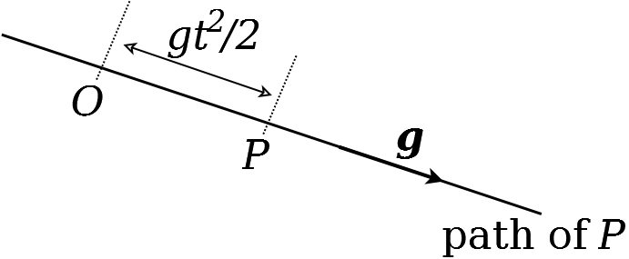
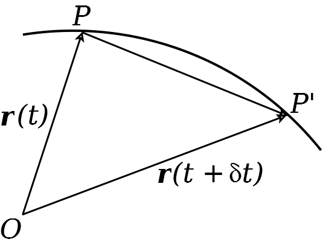

Lecture 15. Motion in more than one dimension#
So far, we have only looked at particles that move in one dimension. However, given that space has (at least) three spatial dimensions, this is very limiting in terms of what we can model about the physical world. To extend the ideas from previous lectures into higher dimensions, we need vectors, which you have been studying in your Core module. For example, suppose there is a particle \(P\) moving in 3 dimensions, as in Figure 21. Then its location at time \(t\) is given by a vector, which we call \(\mathbf{r}(t)\). (Note that we use bold font for vectors.) As \(t\) changes, \(P\) traces out a curve, called the path of the particle.
Figure 21: A particle moving in 3 dimensions, tracing out a path.
Example 21
The position vector of a particle \(P\) is given, at time \(t\), by
where g is a constant vector. Sketch the path of the particle.
Solution.
Since \(\overrightarrow{O P}=\mathbf{r}\), the vector \(\overrightarrow{O P}\) is always in the direction of the constant vector \(\mathbf{g}\). Therefore \(P\) moves along a straight line through the origin \(O\) in the direction of \(\mathbf{g}\). At time \(t\),
Therefore the particle moves away from \(O\) in the direction of g , and its distance from \(O\) at time \(t\) is \(g t^{2} / 2\). A sketch of the path is given below.
Now we have shown how to describe the location of a particle, we also want to be able to describe its velocity and acceleration. For this, we need to know how to differentiate vectors.
Definition 16
Let \(\mathbf{r}(t)\) be the location vector (also called ‘position vector’) of a particle moving in \(n\)-dimensional space. We can write this vector as \(\mathbf{r}(t)=\left(r_{1}(t), r_{2}(t), \ldots, r_{n}(t)\right)\), where \(r_{i}(t)\) is a scalar function of time for each \(i \in\{1, \ldots, n\}\). Then the derivative of \(\mathbf{r}(t)\) with respect to time \(t\) is written as
and is defined by
Here, \(\mathbf{v}(t)\) is called the velocity of the particle and is a vector quantity. The speed of the particle is \(|\mathbf{v}(t)|\), the magnitude of \(\mathbf{v}(t)\). The acceleration of the particle is
which is also a vector.
In three dimensions (i.e. \(n=3\) ), we can write \(\mathbf{r}(t)=r_{1}(t) \mathbf{i}+r_{2}(t) \mathbf{j}+r_{3}(t) \mathbf{k}\), where \(\mathbf{i}=(1,0,0), \mathbf{j}=(0,1,0), \mathbf{k}=(0,0,1)\), as is standard. We also sometimes write \(x, y, z\) instead of \(r_{1}, r_{2}, r_{3}\), respectively, so that
Finally, sometimes we will use column vectors instead of row vectors for \(\mathbf{i}, \mathbf{j}\), and \(\mathbf{k}\), so that
Similarly, in two dimensions, we write \(\mathbf{r}(t)=x(t) \mathbf{i}+y(t) \mathbf{j}\), where in this case \(\mathbf{i}=(1,0)\) and \(\mathbf{j}=(0,1)\); or, in column vector notation
15.1 Geometric interpretation of velocity#
We can interpret velocity geometrically, by using the definition of a derivative
Combining this definition with Equation (179) gives
Now, suppose a particle is at location \(P\) at time \(t\). Then the vector associated to this location is \(\mathbf{r}(t)=\overrightarrow{O P}\). Suppose that, at time \(t+\delta t\) the particle is at \(P^{\prime}\) (where \(\delta t\) is arbitrarily small). Then we can write \(\mathbf{r}(t+\delta t)=\overrightarrow{O P^{\prime}}\).
Furthermore, \(\overrightarrow{P P^{\prime}}=\overrightarrow{O P^{\prime}}-\overrightarrow{O P}\) (see Figure 22). Therefore
In this limit, the velocity of the particle is along the tangent to the path.. Hence we can view the velocity at a point as the tangent vector to the path of motion at that point.
Figure 22: Geometric interpretation of velocity
15.2 Examples#
Example 22
The location vector of a particle \(P\) is given, at time \(t\), by
where \(\mathbf{g}\) is a constant vector. Find the velocity, speed, and acceleration of the particle at time \(t\).
Solution.
The velocity is \(\mathbf{v}(t)=\dot{\mathbf{r}}(t)\). Since \(\mathbf{g}\) is a constant,
Hence the velocity of the particle is \(\mathbf{v}(t)=\mathbf{g} t\). The speed is \(s(t)=|\mathbf{v}(t)|=g t\), where \(g=|\mathbf{g}|\) is the magnitude of g . The acceleration is
Notice that velocity and acceleration are vectors, whereas speed is a scalar.
Example 23
The location vector of a particle \(P\) in two dimensions is given, at time \(t\), by
(a) Find the velocity, speed and acceleration of the particle at time \(t\).
(b) Show that the path of the particle is a unit circle around the origin.
(c) Show that the acceleration is orthogonal to the velocity.
Solution.
(a) The velocity is
so the speed is
Therefore the particle moves at a constant speed. The acceleration is
(b) The particle’s location at time \(t\) is a distance \(|\mathbf{r}(t)|\) from the origin. Note that
so the particle is always on a unit circle. (c) To show that the acceleration is orthogonal to the velocity, we calculate the scalar (dot) product as
Recall from your Core module that, since the dot product vanishes, this means that \(\mathbf{a}(t)\) and \(\mathbf{v}(t)\) are orthogonal. Acceleration acting orthogonally to the direction of motion is sometimes called centripetal acceleration.
Lecture 15 Homework exercises#
Exercise 28.
For each of the following location vectors, calculate the velocity, speed, and acceleration of a particle whose location is described by the vector. In each case, sketch the path of the particle. [Hint: an easy way to sketch a path is to plot values of \(\mathbf{r}(t)\) for various values of \(t\) and join the dots; for example, try \(t=0,1,2,3,4,5, \ldots\) ]
(a) \(\mathbf{r}(t)=t \mathbf{i}+t^{2} \mathbf{j}\).
(b) \(\mathbf{r}(t)=t \mathbf{i}+t^{3} \mathbf{j}\).
(c) \(\mathbf{r}(t)=\sin (t) \mathbf{i}+t \mathbf{j}\).
(d) \(\mathbf{r}(t)=\sin (t) \mathbf{i}+\cos (t) \mathbf{j}\).
(e) \(\mathbf{r}(t)=\exp (-t)[\sin (t) \mathbf{i}+\cos (t) \mathbf{j}]\)
Exercise 29.
(a) At time \(t\), the location vector \(\mathbf{r}=\mathbf{r}(t)\) of a point \(P\) is given by
where \(\mathbf{g}\) and \(\mathbf{U}\) are constant vectors. Find the velocity of \(P\) at time \(t\). What is \(\dot{\mathbf{r}}(0)\) ? Show that \(\ddot{\mathbf{r}}(t)=\mathrm{g}\) for all \(t\). (b) Suppose now that at time \(t\), the location vector \(\mathbf{r}=\mathbf{r}(t)\) of the point \(P\) is given by
where \(\mathbf{g}\) and \(\mathbf{U}\) are constant vectors, and \(k\) is a constant scalar. Find the velocity of \(P\) at time \(t\), and show that \(\ddot{\mathbf{r}}(t)=\mathrm{g}-k \dot{\mathbf{r}}(t)\) for all \(t\). What is the initial velocity of \(P\) ? (c) What are the dimensions of \(\mathbf{g}, \mathbf{U}\) and \(k\) ?
Exercise 30.
A particle \(P\) is moving such that at time \(t\) its location vector is
where \(a\) and \(w\) are positive constants. Show that \(P\) moves on a circle, and find the centre and radius of the circle. Sketch the circle in the \((x, y)\)-plane, including its centre and radius. Find
(a) the velocity, speed and acceleration of \(P\),
(b) the time taken for \(P\) to perform one revolution of the circle.
Add the direction of the acceleration to your sketch of the circle.